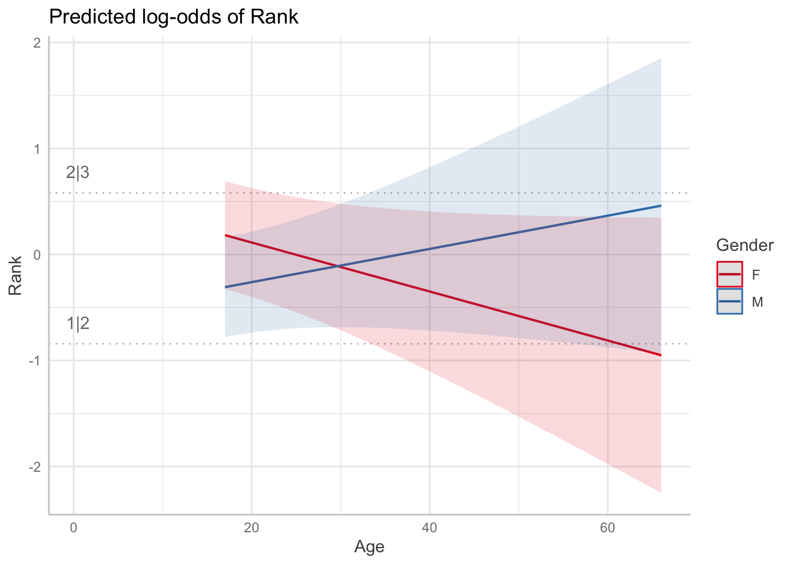

Code
library(tidyverse)
library(broom)
library(performance)
library(ordinal) #clm
library(car) # anova
library(ggeffects) # viz
library(gofcat) # brant
library(brms)
library(emmeans) # contrasts
library(knitr)If you are fitting a model, display the model output in a neatly formatted table. (The tidy and kable functions can help!)
If you are creating a plot, use clear labels for all axes, titles, etc.
Commit and push your work to GitHub regularly, at least after each exercise. Write short and informative commit messages.
When you’re done, we should be able to knit the final version of the QMD in your GitHub as a HTML.
I am a huge fan of Great British Bake-off. The data for this week’s lab is taken from https://bakeoff.netlify.app/. In this lab you will be looking at Gender and Age as a predictor of technical rank. For this exercise, we will only be looking at those who were in top 3 of technical.
In the GBBO technical, the bakers are usually provided with a list of ingredients and basic instructions, but they may not have access to specific measurements or details on how to prepare the ingredients. The judges evaluate the bakers’ finished products based on factors such as appearance, texture, and flavor, but also compare the bakers’ results to a standard version of the recipe that has been prepared in advance by the judges or a baking expert.
The dataset contains 3 variables:
Gender: M = MALE, F = FEMALE
Age: Age of baker
Technical Rank: Rank in technical (1,2,3)
Plot two figures showing the percentage of bakers in each rank— create one for Gender and Age
Convert the outcome variable to an ordered factor. What does the order here represent?
[1] 2 3 1 2 1 3 1 3 2 3 2 1 2 1 3 2 1 3 1 2 3 3 1 2 3 1 2 1 2 3 3 1 2 1 3 2 2
[38] 1 3 2 3 1 3 2 1 3 2 1 1 3 2 3 1 2 1 3 2 2 1 3 2 1 3 3 1 2 2 1 2 3 2 1 2 1
[75] 3 1 2 3 2 1 3 1 3 2 2 3 1 1 3 2 3 2 1 3 2 1 3 1 2 3 2 1 3 2 1 1 2 3 3 2 1
[112] 2 3 1 2 3 1 3 2 1 1 2 3 1 3 2 2 1 3 2 3 1 1 2 3 2 1 3 3 1 2 3 1 2 2 3 1 1
[149] 2 3 3 2 1 1 3 2 2 1 3 3 1 2 3 2 1 2 3 1 1 2 3 2 1 3 2 3 1 1 3 2 2 1 3 2 3
[186] 1 1 2 3 2 3 1 3 2 1 2 1 3 2 3 1 3 2 1 2 3 1 2 3 1 2 3 1 1 2 3 3 2 1 2 3 1
[223] 3 1 2 2 3 1 1 3 2 2 3 1 1 2 3 2 1 3 1 2 3 3 2 1 1 2 3 1 2 3 1 2 3 2 1 3 2
[260] 3 1 1 3 2 1 2 3 2 3 1 3 1 2 2 1 3 2 1 3 2 3 1 1 3 2 1 2 3 2 1 3 2 3 1 3 2
[297] 1 1 3 2 3 1 2 3 2 1 1 3 2
Levels: 1 < 2 < 3Convert input variables to categorical factors as appropriate.
Run a ordinal logistic regression model against all relevant input variables. Interpret the effects for Gender, Age and Gender*Age (even if they are non-significant).
| term | estimate | std.error | statistic | p.value | coef.type |
|---|---|---|---|---|---|
| 1|2 | -0.8419558 | 0.3422080 | -2.460363 | 0.0138797 | intercept |
| 2|3 | 0.5796803 | 0.3404226 | 1.702826 | 0.0886007 | intercept |
| Gender1 | -1.1494724 | 0.6729011 | -1.708234 | 0.0875930 | location |
| Age | -0.0037139 | 0.0092343 | -0.402186 | 0.6875471 | location |
| Gender1:Age | 0.0387873 | 0.0185316 | 2.093039 | 0.0363456 | location |
Gender: Males more likely to place better in technical, b = -1.15, SE = .67, z = -1.71, p = 0.087. The log-odds of a baker achieving a higher rank as a male instead of a female is -1.149473 (95% CI [-2.46, 0.16]). Therefore, being male compared to being female is associated with a higher probability of achieving a higher rank. Converting this result to an odd ratio reveals that males are 0.32 times as likely to have a higher rank compared to female bakers (i.e. they are more likely to place higher in technical) (95% CI [0.08, 1.18]).
Age: An Increase in age results in increased log odds of placing better in technical, b = -0.004, SE = .009, z = -0.402, p = 0.688. Increase in age leads a decreases of odds by .997 of placing worse in technical.
Gender*Age: The effect of age on the log odds of achieving a better rank differs between genders, b = 0.038 (95% CI [0.002, 0.075]). Specifically, there is an increase in odds of achieving a better rank with age that is more pronounced for females than for males. Converting this result to an odd ratio reveals that the effect is 1.039 times more pronounced (95% CI [1.00, 1.07]).
Test if the interaction is warranted
It is!
Use ggemmeans to create a figure showing the interaction between Gender and Age as a function of rank. Plot predicted probabilities from the model.
ggeffects updated package to include latent viz.

Use the Brant test to support or reject the hypothesis that the proportional odds assumption holds for your simplified model.
Brant Test:
chi-sq df pr(>chi)
Omnibus 1.295 3 0.73
Gender1 0.585 1 0.44
Age 0.415 1 0.52
Gender1:Age 0.924 1 0.34
H0: Proportional odds assumption holdsbrmsReference the readings from this week and run the above model in brms. Do not worry about priors we will just use the default priors for this. You will notice there are no p-values (the horror!!!). Focus on the population-level effects from the output and look at the 95% credible intervals (if they don’t include zero you can use this as an index of significance, or lack of). Are there any differences between the model you fit with clm and the one you fit with brms?
Use the conditional_effects function to plot predicted probabilities by Gender and Age across each rank. Note: the papers use marginal_effects but that has been replaced with conditional_effects.
Use check_predictions from the easystats performance package. It is useful for examining model fit (i.e., does the data fit the model being used?). Run the below code. What do you think?